Kussens — Balans
Balans: één contourkussen, drie hoogtes.
Balans is er in drie hoogtes — 10, 12 en 14 cm — zodat je de opvulling kunt afstemmen op je schouderbreedte en slaaphouding.
01 — Balans 10 cm
10 cm hoogte, voor een lage, egale ondersteuning.
Balans 10 cm is de laagste uitvoering binnen de Balans-lijn: een contourkussen in 100% natuurlatex met een egale, stabiele ondersteuning, geschikt voor rug- en buikslapers of wie een lager kussen prefereert.
- 100% natuurlatex
- Hoogte 10 cm
- Contourmodel
- Afneembare, wasbare hoes
- Stabiele, egale ondersteuning
Goed om te weten: hoe lager het kussen, hoe minder de nek wordt opgetild — prettig voor rug- en buikslapers.

Balans 10 cm02 — Balans 12 cm
12 cm hoogte, de meest gekozen ondersteuning.
Balans 12 cm heeft een gemiddelde hoogte en is de meest gekozen uitvoering binnen de lijn — een egale, stabiele ondersteuning die bij de meeste slaaphoudingen past.
- 100% natuurlatex
- Hoogte 12 cm
- Contourmodel
- Afneembare, wasbare hoes
- Stabiele, egale ondersteuning
Goed om te weten: Balans biedt een egale ondersteuning die goed past als je regelmatig van slaaphouding wisselt.
03 — Balans 14 cm
14 cm hoogte, voor bredere schouders.
Balans 14 cm is de hoogste uitvoering binnen de lijn en biedt extra opvulling — geschikt voor zijslapers met bredere schouders, die meer ruimte tussen hoofd en matras nodig hebben.
- 100% natuurlatex
- Hoogte 14 cm
- Contourmodel
- Afneembare, wasbare hoes
- Stabiele, egale ondersteuning
Goed om te weten: een hoger kussen zoals Balans 14 cm houdt bij zijslapers de wervelkolom rechter tussen hoofd en matras.
Combineer je Balans met de rest van de collectie
Bekijk ook onze andere kussenmodellen, boxsprings, matrassen, topmatrassen en gestoffeerde ledikanten.
Bekijk alle kussens